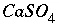

ORGANIZATION OF THE COMPUTER CODE
The computer code for PHREEQC is divided into 22 files of C code, roughly corresponding to processing tasks. Definitions of global variables and global structures are defined in the header file
global.h
, which is included in all of the source code files (those ending in ".c") except
cl1.c
. Definitions of variables and structures for the Basic interpreter are contained in
p2c.h
. Definitions for memory allocation routines are contained in
phqalloc.h
, which is included in all source code files except
phqalloc.c
.
The main program is in the file
main.c
. It contains the logic for the sequence of calculations, which occur in the following order: (1) At the beginning of the run, the database file is read. The database file usually defines the elements and mass-action expressions for all of the aqueous species and phases. Definition of species for exchangers and surfaces and rate expressions may also be included in this file. (2) A simulation is read from the input data file. (3) Any initial solution calculations are performed. (4) Any initial exchange-composition calculations are performed. (5) Any initial surface-composition calculations are performed. (6) Any initial gas-phase-composition calculations are performed. (7) Any batch reactions (mixing, irreversible reaction, mineral equilibration, and others) are performed. (8) Any inverse modeling calculations are performed. (9) Any advective-reactive transport calculations (
ADVECTION keyword) are performed. And, (10) any advective-dispersive-reactive transport calculations (
TRANSPORT keyword) are performed. The sequence from (2) through (10) is repeated until the end of the input file is encountered. The subroutines that perform tasks (3) through (7) are found in the file
mainsubs.c
. The subroutines to perform inverse modeling (8) are found in
inverse.c
, to perform advective-reactive transport modeling (9) are found in
advection.c
, and to perform dispersive/diffusive-reactive transport modeling (10) are found in
transport.c
.
The file
read.c
is used to read both the database file and the input file. It contains a main subroutine that calls subroutines that read each data block. All subroutines to read data blocks are found in
read.c
, except the subroutines for
TRANSPORT, which are found in
readtr.c
, and
SOLUTION_SPREAD, which are found in
spread.c
. In the process of reading, memory is allocated to store the information for each keyword. Thus, the memory used by the program grows depending on the number and type of keywords that are included in the input file. The only restriction on the size of the program is the available memory and swap space that is physically present in the computer that is used. Chemical equations that are read from the input files are interpreted and checked for charge and mole balance by the subroutines in
parse.c
.
Subroutines in the file
tidy.c
check and organize the data read through
read.c
. These subroutines sort the lists of species, solutions, phases, pure-phase assemblages, and others, so that the order of these entities is known. They ensure that any elements used in mass-action equations are defined to the program and that all necessary primary and secondary master species exist. In addition, they rewrite all mass-action equations so that they contain only primary and secondary master species. Other consistency checks and data organization for exchangers, gas phases, pure-phase assemblages, surfaces, solid solutions, and inverse modeling are performed by the subroutines in this file. Also, the selected-output file is opened and headings are written.
Subroutines in the file
prep.c
set up the equations for a calculation. The equations and unknowns that are needed for the calculation are determined and work space to solve a matrix with this number of equations and unknowns is allocated. All mass-action expressions are rewritten according to the master-species and redox information for the calculation. Several lists of pointers are prepared that allow the residuals of equations, the Newton-Raphson array, and the change in moles of elements due to mineral mole transfers to be calculated quickly. These lists are C structures that in general contain a pointer to a "source" datum in memory, a coefficient, and another pointer to a "target" memory location. The source datum is retrieved, multiplied by the coefficient, and added to the target memory location. As an example, consider the species 
, which should appear in the mole-balance equations for calcium, sulfur, and oxygen. One of the lists is used to calculate the residuals of the mole-balance equations. There would be three entries in this list for the species  . In all three entries, the source datum would be a pointer to the moles of
. In all three entries, the source datum would be a pointer to the moles of  . The target memory locations would be the variable locations where the residuals for calcium, sulfur, and oxygen mole balances are stored, and the coefficients would be 1.0, 1.0, and 4.0, respectively. Once the entire list is generated, at each iteration, it is only necessary to perform the multiplications and additions as described by the list to calculate the residuals of the mole-balance equations, no extraneous calculations (multiplication by zero, for example), additional loops, or conditional statements are necessary. The actual implementation uses several lists for each task to skip multiplication if the coefficient is 1.0, and to include constants that are not iteration dependent (that is, do not require the pointer to a source datum). An additional list is generated that is used for printing. For each aqueous species, this list includes an entry for each master species in the mass-action equation. This list is sorted by master species and concentration after the equilibrium calculation is completed and provides all the information for aqueous, exchange, and surface species for printing results to the output file.
. The target memory locations would be the variable locations where the residuals for calcium, sulfur, and oxygen mole balances are stored, and the coefficients would be 1.0, 1.0, and 4.0, respectively. Once the entire list is generated, at each iteration, it is only necessary to perform the multiplications and additions as described by the list to calculate the residuals of the mole-balance equations, no extraneous calculations (multiplication by zero, for example), additional loops, or conditional statements are necessary. The actual implementation uses several lists for each task to skip multiplication if the coefficient is 1.0, and to include constants that are not iteration dependent (that is, do not require the pointer to a source datum). An additional list is generated that is used for printing. For each aqueous species, this list includes an entry for each master species in the mass-action equation. This list is sorted by master species and concentration after the equilibrium calculation is completed and provides all the information for aqueous, exchange, and surface species for printing results to the output file.
In batch-reaction and transport calculations, if the set of elements, exchanger components, gas-phase components, pure phases, solid solutions, and surface components does not change from one calculation to the next, then the lists prepared in
prep.c
do not need to be regenerated. In this case, the lists used during the previous calculation are used for the current calculation. Thus, most of the time spent in the subroutines of the file
prep.c
can be saved.
The subroutines in
model.c
solve the equations that have been set up in
prep.c
. Initial estimates for the master unknowns are calculated and the residuals for mole-balance equations are reduced below tolerances to provide suitable estimates for the Newton-Raphson technique. Once suitable estimates of the master unknowns have been found, the following iterative process occurs. (1) The residuals of the equations are tested for convergence; if convergence is found, the calculation is complete. Otherwise, (2) the Newton-Raphson matrix is formulated and solved (by subroutine cl1, in file
cl1.c
), (3) the master unknowns are updated, (4) activity coefficients are calculated, (5) the distribution of species is calculated, (6) if a master species of a redox element becomes small, basis switching may be performed. In the basis-switching process, new mass-action equations are written and the lists for calculating residuals and the Newton-Raphson matrix are remade, and (7) the residuals of the equations are calculated. Steps (1) through (7) are repeated until a solution to the equations is found or a prescribed number of iterations is exceeded. If the numerical method fails to find a solution, six additional sets of convergence parameters are used in trying to obtain convergence (see description of
KNOBS data block in "Description of Data Input" for details on alternative convergence parameters). If all sets of parameters fail, the program terminates.
Following a calculation, the subroutines in
print.c
write data to the output file and to the selected-output file. Concentration data for species are sorted so that species are printed in descending order by concentration. The blocks of output that are written are selected with the keywords
PRINT,
SELECTED_OUTPUT,
USER_PRINT, and
USER_PUNCH. If no data are to be printed to the output file, the species sort is not needed and is not performed. If the aqueous solution, exchange assemblage, gas phase, pure-phase assemblage, solid-solution assemblage, or surface assemblage is saved following a calculation, the routines that perform these tasks are found in
mainsubs.c
.
The subroutines in
step.c
are used to accumulate the moles of each element before batch-reaction and transport calculations. Total concentrations of elements are calculated from the amounts in solution, on exchangers, in the gas phase, and on surfaces. A check is made to ensure that all of the elements in the pure phases and solid solutions are included in the list of elements with positive concentrations. If an element is in a pure phase or solid solution, but not in the aqueous solution, a small amount of the pure phase is added to the aqueous solution. If the moles of the pure phase or solid solution are zero and one of its constituent elements is not present, that pure phase or solid solution is ignored in the calculations.
If kinetic calculations are defined for batch-reaction or transport calculations, the reactions are integrated by routines in
kinetics.c
and the extent of the kinetic reactions at each time increment are calculated by the Basic interpreter, which is found in
basic.c
and
p2clib.c
. If explicit diffuse-layer calculations are made, the integration of the Poisson-Boltzmann equation is performed by the subroutines in
integrate.c
.
A few functions that are used throughout the code are found in
utilities.c
. Finally, many of the manipulations of structures, including allocating space, initializing, copying, and freeing space are performed by subroutines in the file
structures.c
. The subroutine "clean_up" (in
structures.c
) frees all allocated memory at the termination of the program. The file
phqalloc.c
contains subroutines to allocate, reallocate, and free memory. These subroutines have capabilities for debugging memory leaks, that is memory that is allocated, but not released when it is no longer needed.
For efficiency, a hash table of character strings is kept by the program. Each character string, including element names, species names, phase names, and others, is stored only once. All references to the same string then point to the same memory location. Thus, for example, a comparison of element names need only check to see if the memory address is the same, avoiding the necessity of comparing the strings character by character. Finding the memory location of a specified string is performed by a hash table lookup. Hash tables are also used to speed up lookups for species, elements, and phases.
| Next|| Previous || Top |